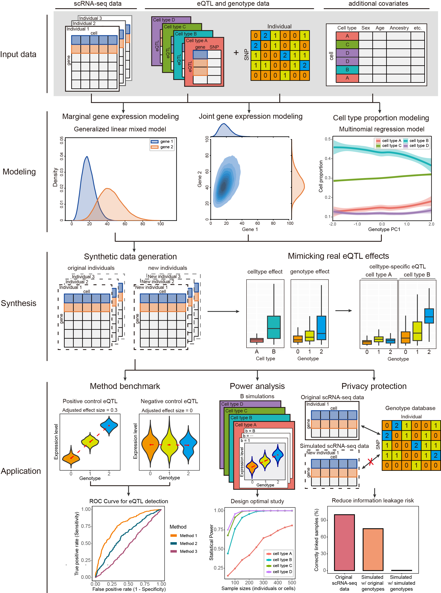

scDesignPop
scDesignPop is a simulator for population-scale single-cell RNA-sequencing (scRNA-seq) data. By incorporating eQTL effects from genotype data with other covariates, scDesignPop has several key applications:
- performing eQTL power analyses at cell-type resolution,
- protecting genomic privacy by mitigating eQTL-based re-identification of individuals via linking attacks,
- simulating scRNA-seq data for new individuals using either simulated or real genotype data, and
- generating positive- and negative-control data for cell-type-specific eQTLs.
Detailed tutorials that illustrate various functionalities of scDesignPop are available at this website. The following illustration figure summarizes the workflow of scDesignPop:

Installation
You can install the development version of scDesignPop from GitHub with:
# install.packages("remotes")
remotes::install_github("chrisycd/scDesignPop")Tutorials
For all detailed tutorials, please check the website. The tutorials will demonstrate the applications of scDesignPop from the following perspectives: preprocessing, data simulation, model alteration, and power analysis.
Preprocessing
-
Data simulation
-
Model alteration
-
Power Analysis
Contact
Any questions or advice on scDesignPop are welcomed! Please report it on issues, or contact Chris Dong (cycd@g.ucla.edu) or Yihui Cen (yihuicen@g.ucla.edu).
Related Manuscripts
The original scDesignPop paper
-
The simulator for general single-cell counts: scDesign3
-
The predecessors of scDesign3
- scDesign: Li, W. V., & Li, J. J. (2019). A statistical simulator scDesign for rational scRNA-seq experimental design. Bioinformatics, 35(14), i41-i50.
- scDesign2: Sun, T., Song, D., Li, W. V., & Li, J. J. (2021). scDesign2: a transparent simulator that generates high-fidelity single-cell gene expression count data with gene correlations captured. Genome biology, 22(1), 1-37.
-
The simulator for single-cell multi-omics reads developed by our lab member Guanao Yan